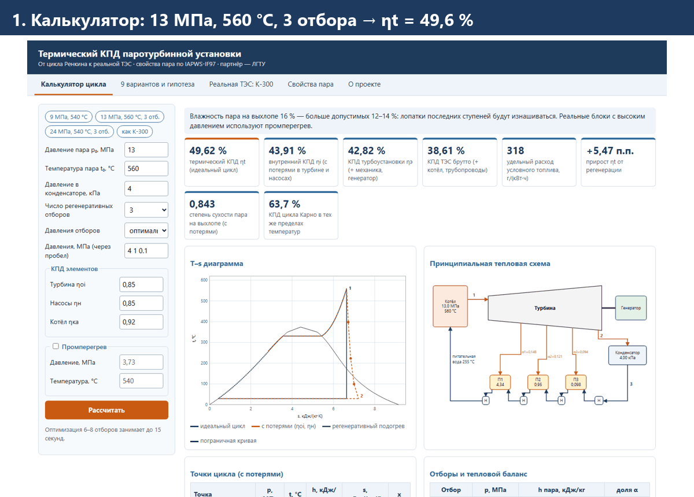
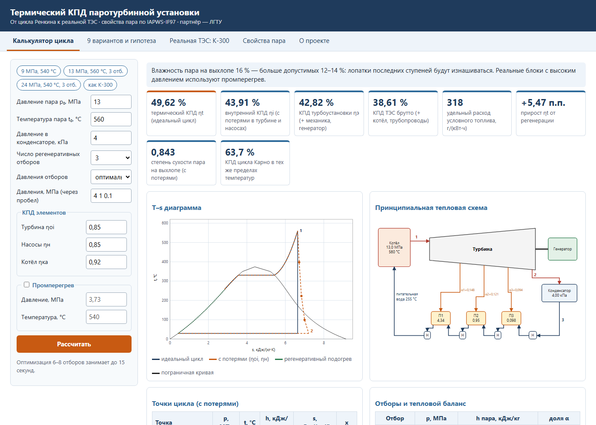
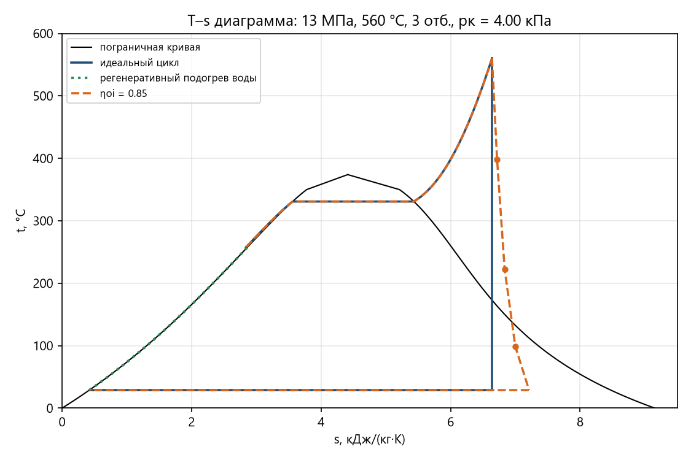
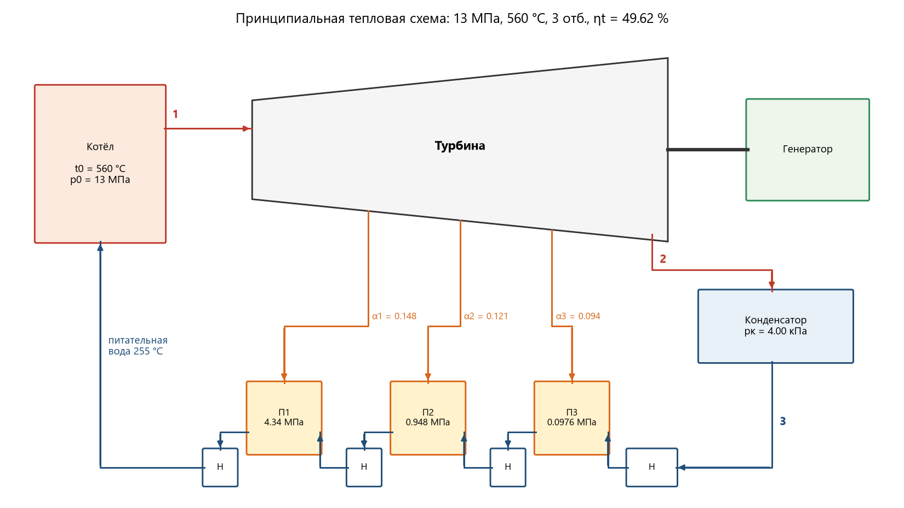

О проекте
Модель считает термический КПД паротурбинной установки для 9 вариантов начальных параметров (9/13/24 МПа × 540/560/600 °C) и 0–3 регенеративных отборов с оптимальными давлениями. Свойства пара берутся по IAPWS-IF97.
Дополнительно строятся T–s диаграммы и принципиальные тепловые схемы, результаты собраны в Excel-книгу с формулами, а отдельный блок сравнивает модель с реальным энергоблоком К-300-240.
Кому и зачем
Страница — для школьников и студентов, которые разбираются в цикле Ренкина, и для экспертов, которым нужны результаты и проверка модели.
- как параметры пара и число отборов влияют на ηt;
- где заканчивается идеальный цикл и начинаются потери;
- насколько модель близка к реальному блоку.
Ключевые результаты, ηt, %
Термический КПД идеального цикла при pк = 4 кПа и оптимальных давлениях отборов. В таблице — три варианта из девяти; полный набор — на скриншоте «9 вариантов» ниже.
| p0, t0 | 0 отб. | 1 отб. | 2 отб. | 3 отб. |
|---|---|---|---|---|
| 9 МПа, 540 °C | 42,73 | 45,72 | 46,94 | 47,61 |
| 13 МПа, 560 °C | 44,14 | 47,46 | 48,85 | 49,62 |
| 24 МПа, 540 °C | 45,26 | 49,21 | 51,02 | 52,04 |
Гипотеза «насыщения» регенерации подтверждена в 8 из 9 вариантов (исключение — 24 МПа / 540 °C: прирост 2→3 отбора 1,01 п. п.).
Как считается
Термический КПД — доля теплоты, подведённой в котле, которая превращается в полезную работу. В модели проекта свойства пара считаются по IAPWS-IF97, а потери учитываются через КПД турбины, насосов и котла.
КПД цикла
ηt = l0 / q1 = (q1 − q2) / q1
q1 — теплота, подведённая к рабочему телу в котле; q2 — отведённая в конденсаторе; l0 = q1 − q2 — полезная работа цикла.
В энтальпиях: q1 = h0 − hпв, q2 = hкт − hк
Регенерация
Часть пара отбирают из промежуточных ступеней турбины и направляют в подогреватели питательной воды. В котёл поступает уже нагретая вода — средняя температура подвода теплоты растёт, поэтому ηt увеличивается.
Каждый следующий отбор добавляет меньше: прирост замедляется, то есть насыщается.
Предел Карно
ηКарно = 1 − Tхол / Tгор
T — абсолютные температуры в кельвинах. Это КПД идеальной машины между горячим и холодным источником; для реального цикла он служит верхней оценкой.
Формулы — стандартные соотношения термодинамики. Числа проекта — в таблице выше и на скриншотах.
Калькулятор: верхняя оценка идеального цикла
Введите температуру пара и температуру конденсации — страница посчитает КПД цикла Карно между ними. Это простая оценка сверху, а не модель проекта.
КПД идеального цикла Карно
63,6 %
η = 1 − (30 + 273,15) / (560 + 273,15) = 1 − 303,15 / 833,15 = 0,6361 → 63,6 %
Важно: это КПД идеального цикла Карно — верхняя оценка. Он не учитывает потери в турбине, насосах и котле, регенерацию и реальные свойства пара. Термический КПД модели проекта для 13 МПа, 560 °C и 3 отборов — 49,62 % (см. таблицу выше).
Демо (32 с)

Скриншоты и графики
Нажмите на изображение, чтобы открыть его целиком. Листать можно стрелками ← →, закрыть — клавишей Esc.








Как запустить интерактивную версию
На этой странице опубликованы результаты и скриншоты, а сам калькулятор — отдельное приложение на Python, которое работает локально и не требует интернета.
Важно: в опубликованном репозитории файлов приложения нет — здесь только витрина. Для локального запуска нужна папка проекта, в которой есть app/server.py и Запустить.bat; если её нет, интерактивную версию запустить не получится — результаты и скриншоты остаются на этой странице.
- Распакуйте папку проекта с приложением.
- Установите Python 3, если его ещё нет.
- Запустите
Запустить.bat(Windows) или выполнитеpython app/server.pyв корне папки. - Откройте адрес, который сервер выведет в консоль, — интерфейс откроется в браузере.
Саму страницу и изображения можно скачать из репозитория github.com/sirius-leto-2026/rankine-kpd (Code → Download ZIP или git clone); файлы приложения в него не входят. Все расчёты приложения выполняются локально: оно ничего не отправляет и не сохраняет cookie.